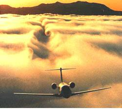
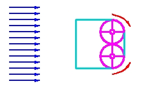
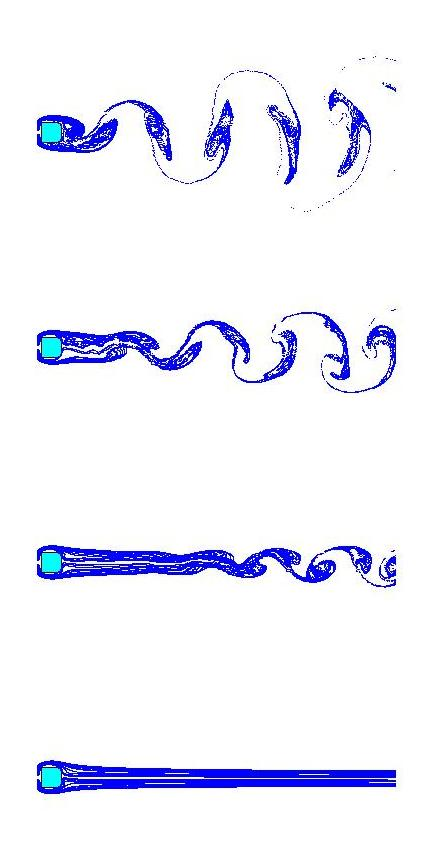

Controlling Turbulence
Controlling Turbulence
The fatal crash of the American Airline (AA) Flight587 on 12th November 2001, is still vivid in people's memory. Thesubsequent investigations suggested that the wake turbulence from thepreceding Japanese airplane may be a partial culprit for causing theinitial mechanical failure of the AA Flight. The phenomenon of waketurbulence is easy to envision: airplanes and other fast moving vehicles churnthe air as they move, leaving behind a tangle of swirls to buffet anythingthat comes in their wake {FIG. 1]. The wake turbulence created behind amassive and slow moving aircraft could be dangerous for another plane followingit too closely. The current US federal regulation requires, on anempirical basis, a minimum of two minutes of separation between thetake-offs of airplanes on the same or a nearby runway. Such restrictions wouldnaturally limit the air-port utilization facilities for takeoff andlanding.

Wake turbulence is omnipresent in nature. When flow passes over anobject, a whole gamut of complex patterns are formed behind the body. Obviously, understanding and controlling wake turbulence is of paramount scientific,engineering, and societal implications. From the point of view ofnonlinear dynamics, wake turbulence is a manifestation of spatio temporalchaos.

The new scheme is promising and is based on the following premise: sincethe wake turbulence contains mainly vortices of fluid motion which physicallygenerates angular momenta on different scales, it could be possible tocounter-balance the motion by injecting angular momentum. The amount ofinjection however can be determined by the average angular momentum of theturbulent flow field, which can be measured in real time by opticalsensors placed on the moving object.

This figure shows the efficience of our feed back control scheme simulatedbased on the Navier-Stokes equation. The original turbulent flow is controlledto a laminae one with increasing amount of angular-momentum injection.
In summary, a novel scheme, which makes use of the angular-momentuminjection and feed-back balance, is proposed to control wake turbulence.While there have been attempts to address the control of wake turbulenceutilizing the OGY approach with idealized low-dimensional Hamiltonianmodels, we investigate a realistic fluid flow governed by the Navier-Stokesequations. Our computations indicate that the size of the instability zonesassociated with wake turbulence can be effectively reduced and eliminated byincreasing the amount of injection of the angular momenta. Although the idea isdemonstrated on a two-dimensional geometry, we believe that, it can be extendedto more complicated and realistic situations. Moreover, technological progressin microfabrication and optical sensors will make the practical implementationof our control scheme less remote.
Reference
B. S. V. Patnaik, and G.W. Wei, Controlling waketurbulence, Phys. Rev. Lett. , 88 , 054502 (2002). This work was featured in Physical Review Focus and Wissenschat-online.